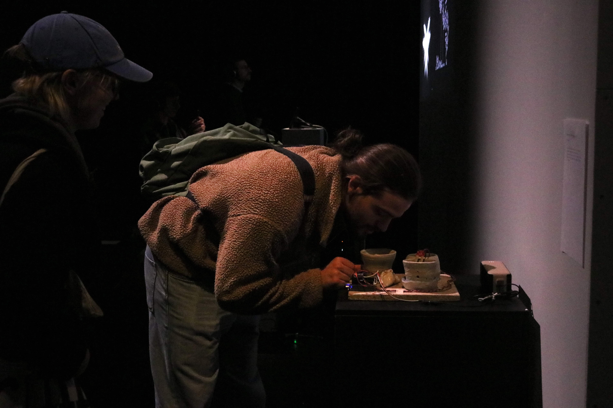
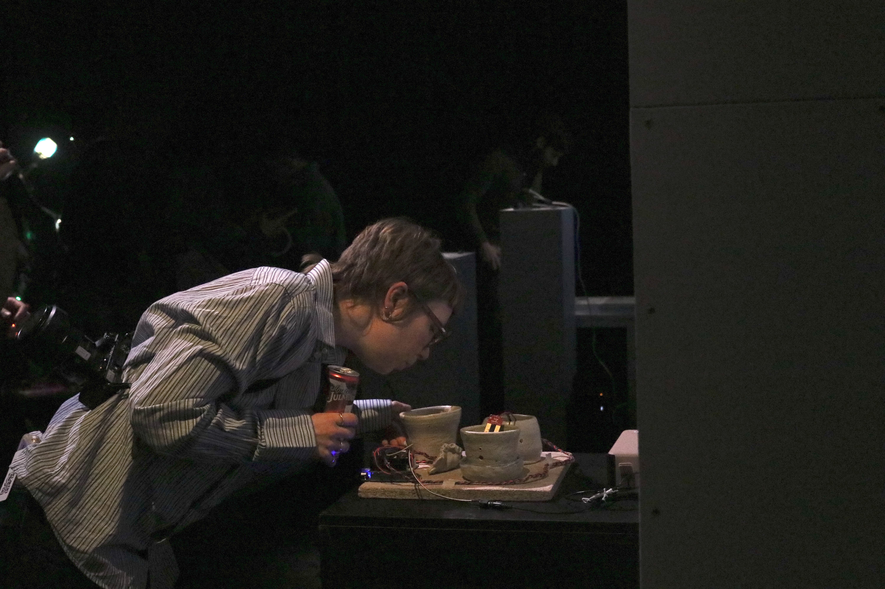
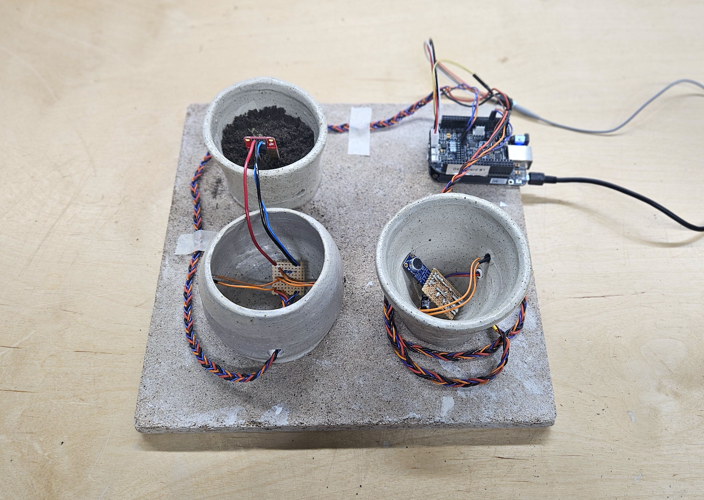
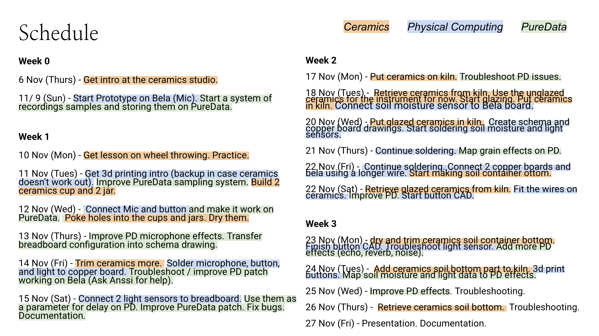
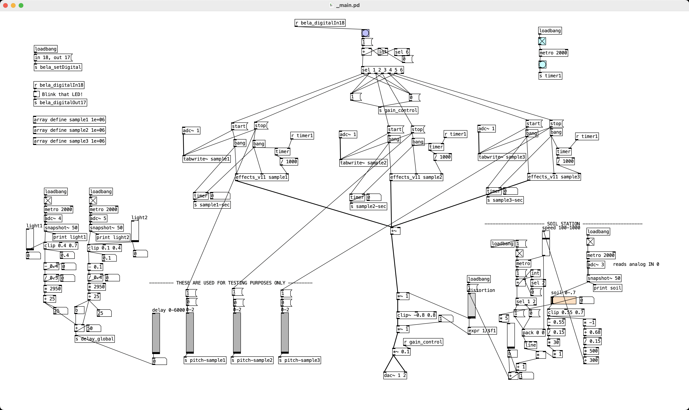
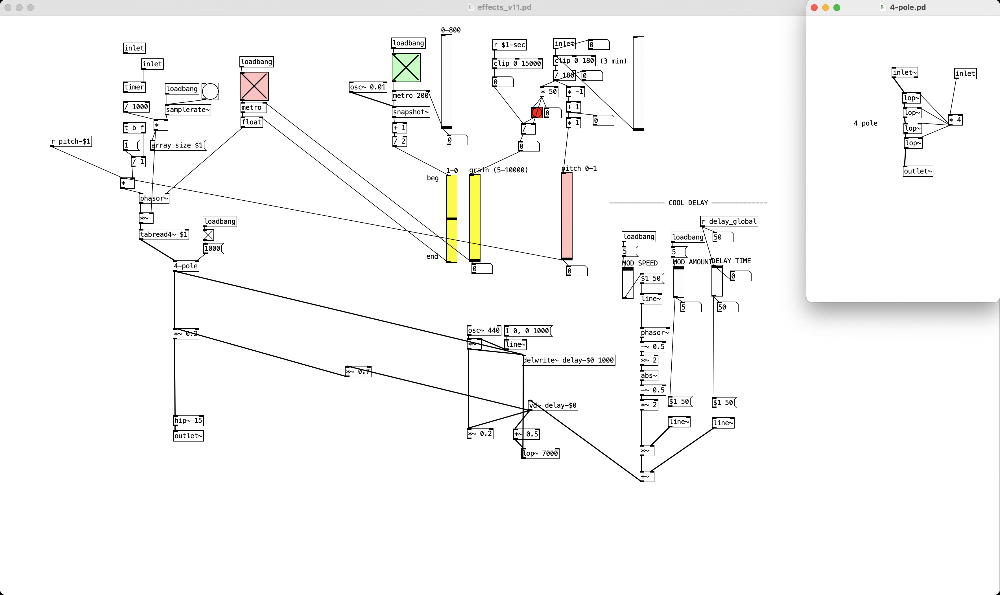

How do our memories transform over time?
Sonic Memory Decomposer, a ceramic-electronic instrument, explores this question through sound. Composed of three interconnected vessels—one that captures voice, one that senses touch and light, and one that holds soil—the instrument records, transforms, and “decomposes” sonic memories.
Visitors are invited to whisper a memory into a cup and listen to it disintegrate over time. With granular synthesis, layered looping, pitch drift, modulated delay, and distortion, older sounds erode as new recordings emerge. The resulting sounds are shaped by human voice, touch, light, time, and soil moisture.
Inspired by my own childhood memory of whispering into a cup, the instrument treats memory as an organic process: distributed across environments, shaped by external forces, and constantly in flux.
Demo (Video)
Exhibition
Sonic Memory Decomposer was exhibited in the Winter Demo Day 2025 of Aalto University.
 Project Details
Project Components
Ceramic Cups
- The first cup houses a microphone and button that allow the audience to record up to three sonic memories up to 15 seconds at a time. These samples are stored as loops that gradually drift, scatter, and disintegrate through granular processing and pitch drift.
- The second cup contains a light sensor and soil-moisture sensor, both of which function as environmental modulators for the audio. Touching, covering, or shading this vessel alters the delay time and modulation of the loops, while the moisture data introduces distortion.
- The third cup physically holds the soil whose changing moisture level directly influences distortion of the recorded voices. Up until a certain moisture threshold, distortion increases linearly; after the threshold, the distortion pulses and the pulse speed and amplitude increases along with the moisture level. The moisture level can be changed by either pouring water into the soil or pulling out the moisture sensor up and down.
Electronics
- 2 copperboards with soldered connections
- 2 light sensors (LDRs)
- 1 soil moisture sensor
- 1 microphone
- 1 button switch
- 1 LED
- jumper wires
- Bela board (running Pure Data patch)
Others
- 1 custom 3d-printed button
Reflection on Design and Implementation
Sonic Memory Decomposer was my final project for Aalto University class "Composing with New Musical Instruments". The project had two requirements: that we should build the structure of the instrument ourselves and also include an interactive sound element using Pure Data, Bela, and other sensors.
This project was challenging because I had to learn and apply three new skill sets at once in the short time of three weeks: ceramics, electronics, and digital sound design. Rather than mastering one before starting another, I worked on all three in parallel to keep each part of the project at the same level of progress. This iterative and modular approach helped when troubleshooting, because issues in one area often influenced decisions in another.
This project was done in a three-week sprint. This meant I had to work on all components at once in case something goes awry.

Designing and soldering my own copperboards was quite empowering. My first instinct was to rely on the photographs of breadboards, but the tangle of wires became difficult to interpret on images. Drawing proper schematics on KiCad and translating them into copperboard layouts allowed me to understand each connection clearly and made the soldering process easier.
On Ceramics
Despite warnings about the difficulty of working with ceramics under tight deadlines, I felt strongly that the physical material needed to be ceramic. This is because the project deals with the themes of soil, memory, decay, and touch, and I wanted the instrument’s body to emerge from the same material conditions it sonifies. Clay is literally decomposed earth; it is shaped by touch; and it records physical traces of the maker. These qualities aligned with the conceptual framework of the project.
On Pure Data & Sound Design
 
The Pure Data patches for Sonic Memory Decomposer: _main.pd, effects_v11.pd, 4-pole.pd
The Pure Data patches grew into a modular system:
- A recording module with three looping buffers
- Granular processing for slow erosion
- Distortion driven by soil moisture
- Delay and feedback controlled by touch/light interaction
Overall, building Sonic Memory Decomposer was an intense but empowering creative process. I confronted several unfamiliar mediums at once and was able to learn through many technical and material challenges. Before this course, I didn’t know I could design and build a digital instrument from scratch. Now I understand that the process is accessible, learnable, and deeply rewarding. As a music maker, it is empowering to know that I can design the tools that I create sounds with. And as an artist, I am now able to combine sound into my artistic practice in a more controlled and interesting way. I can tell that this process has changed my direction as an artist and researcher, and I want to keep exploring deeper into the art of instrument design and building.